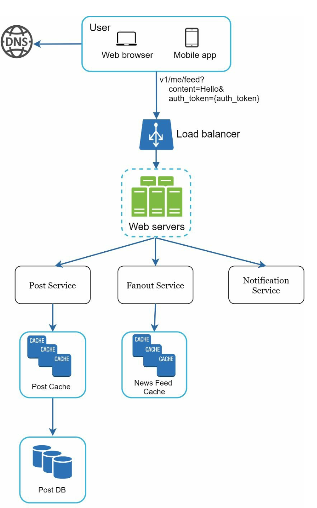
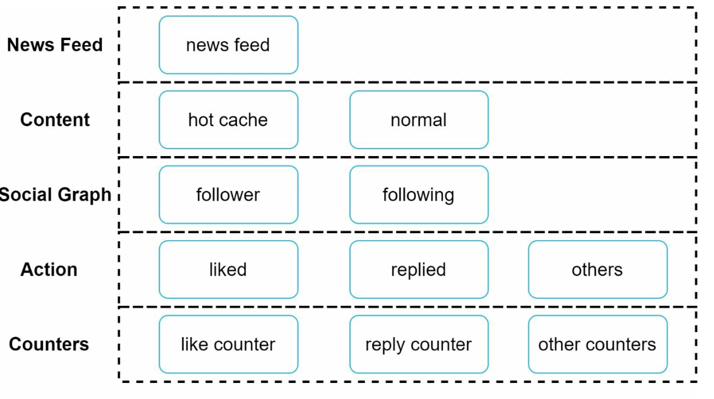

第 11 章：设计信息流系统
原章节：Design a News Feed System · 原项目路径
11. News Feed System/
本章导读
信息流（News Feed）是你每天都会用、却很少去想它有多难的东西。打开微信朋友圈、刷微博、看 Twitter——屏幕上的内容是怎么在几百毫秒内被拼出来的？
这一章要解决的核心问题是：当你有 1000 万活跃用户、有人有 5000 个好友、还有人有一千万粉丝时，"把好友的动态聚合给你看"这件事，到底该在写入的时候做，还是在读取的时候做？
这不是一个可以含糊过去的问题——它决定了整个系统的成本、延迟和可扩展性。学完这一章，你应该能回答：为什么 Twitter、微博这类系统最终都选择了"推拉结合"？一个大 V 发一条动态，系统要付出多少代价？为什么"按时间倒序"正在被"算法排序"取代，架构上要做什么改造？
你将学到
- 信息流系统的两条核心链路：发布（Feed Publishing）与读取（News Feed Building）
- 推模式（Fan-out on Write / 写扩散）、拉模式（Fan-out on Read / 读扩散）、推拉结合的完整对比与选型依据
- 为什么 Twitter / 微博最终选择"普通用户推、大 V 拉"的混合模式
- 大 V 问题的量化：一个 1000 万粉丝的用户发一条动态，成本是多少
- 五层缓存架构各自解决什么问题
- 从时间倒序到算法排序：排序系统需要哪些新组件
1. 需求与规模
功能需求
- 平台：同时支持 Web 和移动端。
- 发布：用户可以发帖（文字、图片、视频、链接）。
- 消费：用户可以看到好友的动态，聚合在自己的信息流里。
- 排序：原笔记为了简化，设定为按时间倒序（reverse chronological order）。
规模估算
原笔记给的数字是：
- 单用户最多 5000 个好友
- 1000 万日活用户（DAU, Daily Active Users）
- 信息流里包含文字、图片、视频
这些数字看起来不大，但一旦开始算扇出（fan-out）的量，就会发现问题。
我们先算读取量。 假设每个用户每天刷新信息流 10 次：
日读取量 = 10,000,000 × 10 = 100,000,000 次
平均读 QPS = 100,000,000 / 86,400 ≈ 1,157 QPS
峰值读 QPS ≈ 1,157 × 3 ≈ 3,500 QPS
再算写入量。 假设每个用户每天发 1 条动态，平均每人 200 个好友：
日发帖量 = 10,000,000 条
日扇出写入量 = 10,000,000 × 200 = 2,000,000,000 次（20 亿次）
平均扇出 QPS = 2,000,000,000 / 86,400 ≈ 23,000 QPS
峰值扇出 QPS ≈ 23,000 × 3 ≈ 70,000 QPS
注意这两个数字的不对称：读是 3500 QPS，扇出写是 70000 QPS——写入侧的负载是读取侧的 20 倍。 这个不对称正是本章所有设计的出发点。单台 Redis 大约能扛 10 万次简单操作/秒，70,000 QPS 的峰值已经接近它的极限了，而且还只是"平均情况"，没算大 V。所以扇出必须能分片、能削峰、能选择性地放弃。
一个必须先想清楚的问题
信息流系统的本质是一次多对多的聚合：你关注了 N 个人，系统要把这 N 个人最近的动态，按某个顺序合并成一条列表给你。
这里立刻出现了一个分叉：
- 我可以在别人发帖的时候，就把帖子塞进所有粉丝的信息流里（写的时候扩散）；
- 也可以在我读的时候，才去把关注的人最近的帖子捞出来合并（读的时候扩散）。
这两种选择，就是本章的核心。第 4 节会展开。
2. 高层设计：两条链路与 API
信息流系统可以拆成两条相对独立的链路。
2.1 两条链路
| 链路 | 触发 | 做什么 |
|---|---|---|
| 发布链路（Feed Publishing） | 用户发帖 | 存帖 + 传播到好友的信息流 |
| 读取链路（News Feed Building） | 用户刷信息流 | 聚合好友的帖子，按序返回 |
两条链路的负载特征完全不同：发布是写密集且会放大，读取是读密集且要求低延迟。把它们分开设计，才能各自优化。
2.2 两个 API
原笔记给出的 API 设计很简洁：
发布动态
POST /v1/me/feed
参数：
content 动态内容（文字、图片 URL 等）
auth_token 鉴权令牌
获取信息流
GET /v1/me/feed
参数：
auth_token 鉴权令牌
这里有个现代实践上的补充：真实的信息流 API 一定是基于游标（cursor）分页的，而不是
offset+limit。原因是信息流是持续变化的：你用offset=20翻到第二页，如果这期间有人发了新帖，第一页的内容会整体后移，你第二页就会看到第一页已经看过的内容（重复），或者漏掉内容。游标（比如"上一页最后一条的时间戳/ID"）能锚定一个稳定的位置。 参数大概长这样：GET /v1/me/feed?cursor=<last_post_id>&limit=20。
2.3 发布链路

一条动态的发布流程：
- 用户通过发布 API 提交动态。
- 负载均衡器把请求分发到某台 Web 服务器。
- Web 服务器校验
auth_token，把请求转发给后端服务。 - **帖子服务（Post Service）**把帖子写入数据库和缓存。
- **扇出服务（Fanout Service）**把帖子传播到好友的信息流缓存里。
- **通知服务（Notification Service）**给好友发通知。
2.4 读取链路

- 用户通过读取 API 请求信息流。
- 负载均衡器分发请求。
- Web 服务器把请求转发给信息流服务。
- 信息流服务（News Feed Service）从信息流缓存里取出帖子 ID 列表，再根据这些 ID 去数据库或内容缓存里取完整的帖子详情，组装后返回。
为什么分两步取？ 因为"帖子 ID 列表"很小、变化很快，适合放在缓存里；"帖子详情"（正文、图片 URL、作者信息）体积大、变化慢，适合放在另一层缓存或数据库。如果信息流缓存里直接存完整帖子，一条帖子被 200 个人引用就要存 200 份，内存会爆炸。 存 ID 是标准做法，这个细节在下一节会再出现。
3. 发布链路深入：扇出服务
3.1 扇出服务的五个步骤

原笔记给出的扇出流程是：
- 取好友 ID：从图数据库（Graph DB）里取出作者的好友列表。
- 按缓存过滤：读取用户设置，排除掉不该看到这条动态的人（比如被静音的好友、分组可见的例外）。
- 投递到消息队列：把"过滤后的好友列表 + 新帖子 ID"打包，投进消息队列。
- 扇出 worker 消费：worker 从队列里取任务，更新好友的信息流缓存。
- 写入信息流缓存：把新帖子 ID 追加到好友的缓存列表里。

两个关键设计细节，原笔记提到了，值得展开：
① 缓存里存的是
<post_id, user_id>映射，不是完整帖子对象。 原因上面说过——避免存储放大。一个 5000 好友的大 V 发帖，如果存完整帖子就是 5000 份副本；存 ID 只有 5000 个 8 字节的数字。② 缓存列表有长度上限（configurable limit）。 每个用户的信息流缓存只保留最近 N 条（比如 500 条）。因为绝大多数用户只看最新的内容，保留更早的没有意义，反而会吃掉大量内存。实现上是
LPUSH（头插）+LTRIM（保留前 N 个）。
3.2 为什么要用消息队列
扇出是一个天然的异步操作：用户发帖后，不需要等"传播给所有好友"完成才能看到"发布成功"。所以：
帖子服务（写库，立即返回"发布成功"）→ 消息队列 → 扇出 worker（慢慢传播）
好处和第 10 章通知系统一样：削峰、解耦、可独立扩展。大 V 发帖会产生巨大的扇出任务，先堆在队列里，worker 按自己的能力消费，不会把缓存集群打垮。
4. 核心议题：推模式、拉模式与推拉结合
这是本章最重要的一节。原笔记提到了这三种模式，但对比不够系统，这里补全。
4.1 三种模式是什么
① 推模式（Fan-out on Write / 写扩散）
用户发帖时，立刻把帖子 ID 写进所有好友的信息流缓存。
- 读的时候，直接读自己的缓存列表即可，O(1)。
- 代价：写的时候要写 N 次（N = 好友数）。
② 拉模式（Fan-out on Read / 读扩散）
用户发帖时，只写自己的发件箱（outbox）。好友读信息流时，系统实时去拉取所有关注对象的发件箱，合并排序后返回。
- 写的时候只写 1 次，O(1)。
- 代价：读的时候要拉 M 次（M = 关注数）并合并排序。
③ 推拉结合（Hybrid）
对大部分用户用推模式（他们的粉丝少，写入放大可接受，读取快）；对**大 V（粉丝极多）**用拉模式（不推，等粉丝来读时再拉）。
4.2 完整对比表
| 维度 | 推模式（Fan-out on Write） | 拉模式（Fan-out on Read） | 推拉结合（Hybrid） |
|---|---|---|---|
| 写入成本 | 高，O(粉丝数)，一条动态写 N 次 | 低，O(1)，只写自己的发件箱 | 中，普通用户 O(粉丝数)，大 V O(1) |
| 读取成本 | 低，O(1)，直接读预计算好的列表 | 高，O(关注数)，需实时拉取 + 归并排序 | 中，普通部分 O(1)，大 V 部分 O(大 V 数) |
| 读取延迟 | 低且稳定（毫秒级，一次缓存读） | 高且随关注数增长（要拉 M 个源再排序） | 低（大 V 数量通常只有几十到几百） |
| 写入延迟 | 高（要等扇出完成才可见，或异步有延迟） | 低（写完自己发件箱即可） | 低 |
| 存储放大 | 高：一条动态存 N 份 | 无：一条动态只存 1 份 | 中 |
| 实时性 | 好（写完即扇出） | 取决于缓存，可能差 | 好（大 V 的动态读取时现拉，反而更实时） |
| 热点抗性 | 差：大 V 发帖即风暴 | 好：大 V 发帖不影响任何人 | 好 |
| 不活跃用户 | 浪费：给从不登录的用户白写 | 友好：不登录就不产生读取成本 | 友好（可对不活跃用户关闭推送） |
| 实现复杂度 | 低 | 中 | 高 |
| 适合场景 | 粉丝少、活跃度高的社交关系 | 粉丝多、或读少写多的场景 | 大规模社交网络（Twitter / 微博 / Instagram） |
4.3 为什么最终都选"推拉结合"
先看两个极端为什么都不行。
纯推模式的死穴是"大 V"。 一个 1000 万粉丝的用户发一条动态，就要写 1000 万次缓存——这个量级我们下一节会算，结论是单次发布就会压垮集群。而且这种负载是脉冲式的：大 V 往往在晚间发帖，几百万次写入会在几秒内砸下来。
纯拉模式的死穴是"读取延迟"。 如果每个用户关注了 500 个人，每次刷新信息流都要拉 500 个发件箱、做一次 500 路归并排序。虽然每个发件箱的读取都很快（Redis 单次约 0.1 毫秒），但 500 次就是 50 毫秒，再加上网络往返和排序，很容易突破 100 毫秒。而且这个成本是每个用户每次刷新都要付的——读取 QPS 是 3500，乘以 500 就是 175 万次缓存读/秒。读扩散把成本从"少数人的写入"转移到了"所有人的每一次读取"上，这在读多写少的社交场景里是更糟糕的交换。
推拉结合是怎么做的？
普通用户（粉丝 < 阈值，比如 1 万）发帖 → 推模式：扇出给所有粉丝
大 V（粉丝 ≥ 阈值）发帖 → 拉模式：只写自己的发件箱，不扇出
当你读信息流时：
① 读你自己的信息流缓存（里面是普通好友的动态，已预计算好）
② 额外拉取你关注的所有大 V 的最近动态（通常只有几十个）
③ 把 ①② 合并，按时间（或算法分数）排序，返回
这个设计为什么成立？ 关键在于两个统计事实：
- 大 V 的数量极少。 一个用户可能关注 500 个人，但其中粉丝过万的通常只有几十个。所以第 ② 步的拉取成本是 O(几十)，而不是 O(500)。
- 绝大多数用户是"普通用户"。 平台上的粉丝数分布是典型的幂律分布（Power Law）：头部 0.1% 的用户拥有 90% 的关注。所以推模式覆盖了 99.9% 的写入量，而写放大对这些人来说很小（平均 200 个粉丝）。
推拉结合的本质是"按成本选择策略"：谁的成本高（大 V），就用拉模式把成本延后、摊薄到读取时；谁的成本低（普通人），就用推模式换取读取时的低延迟。这是一个典型的"把昂贵操作从热路径上移走"的工程思路，你在缓存、索引、预计算里会反复见到它。
阈值该设多少？ 这是一个纯工程经验值，没有标准答案。设低了（比如 1000 粉丝），会有大量用户走拉模式，读取成本上升；设高了（比如 100 万粉丝），会有更多用户走推模式，写入放大上升。实践中会根据集群负载动态调整，甚至做 A/B 测试。
4.4 原笔记没提的两个重要变体
① 不活跃用户不推送（Inactive User Optimization）
如果某个用户已经 30 天没登录了，给他扇出就是纯浪费——他不会来看。做法是：
- 维护一个"活跃用户"集合（登录时打点，比如用 Redis 的 bitmap 按天记录）；
- 扇出时跳过不活跃用户；
- 当不活跃用户下次登录时，临时按拉模式构建他的信息流（拉取所有关注对象的最近动态），构建完成后标记为活跃，之后恢复推送。
在一个日活 1000 万、月活可能 5000 万的平台里，这意味着扇出量直接减少 80%。这是最划算的优化之一。
② 新用户 / 冷启动
新注册用户没有任何信息流缓存，第一次打开时要么是空的（体验差），要么需要按拉模式实时构建。通常的做法是：
- 立即按拉模式构建一次（拉取关注对象的最近动态）；
- 如果关注的人太少，混入一些"热门内容"或"推荐内容"填充，避免空白页。
5. 大 V 问题的量化
"大 V 发帖会压垮系统"这句话，只有算出来才有说服力。我们来算一遍。
5.1 场景
一个 1000 万粉丝的用户（比如一个明星）发布一条动态。
如果走纯推模式，扇出服务需要：
1000 万次缓存写入（每次是一个 LPUSH + 一次 LTRIM）
5.2 需要多久
单台 Redis 节点的处理能力（简单命令、pipeline 批量）大约是 10 万次操作/秒。但每次扇出实际上是 LPUSH + LTRIM 两个操作，所以有效吞吐约 5 万次/秒：
1000 万 / 5 万 = 200 秒 ≈ 3.3 分钟
这是单线程 Redis 串行处理的理想值。 如果算上扇出 worker 的网络开销（每个 worker 每秒可能只能处理几千次写入），时间会更长。
分片之后呢？ 如果我们有 100 个 Redis 分片（按 user_id 分片），每个分片只需要处理 10 万次写入：
每个分片 10 万次 / 5 万次每秒 = 2 秒
看起来很快了。但要注意：
- 这是峰值叠加的。 如果这个大 V 不是唯一的大 V，或者恰好赶上晚间高峰，多个大 V 同时发帖，写入量会叠加到同一个分片上（因为分片是按粉丝
user_id分的，某个分片可能同时承载多个大 V 的粉丝）。 - 扇出 worker 本身是瓶颈。 1000 万次写入，即使每个 worker 每秒能写 1 万次，也需要 1000 个 worker 干 1 秒——而实际中 worker 还要做过滤、查图数据库等操作，真实吞吐会低得多。
- 这还只是"一条动态"。 如果一个明星一天发 10 条，就是 1 亿次写入。
5.3 存储放大
每条信息流缓存条目大约 8–16 字节（帖子 ID + 一些元数据）。1000 万条：
1000 万 × 8 字节 ≈ 80 MB（每条动态）
如果这个明星一天发 10 条动态：
80 MB × 10 = 800 MB / 天（只为一个用户）
而一个 200 好友的普通用户，发 10 条动态只产生：
200 × 10 = 2,000 次写入 ≈ 16 KB
两者的写入量相差 5 万倍。 这就是为什么必须对大 V 特殊处理。
5.4 拉模式下的成本对比
改用拉模式后，这个大 V 发帖的成本是：
1 次写入（写自己的发件箱）
成本几乎为零。而代价被转移到了读取侧：每个关注他的粉丝，每次刷新信息流时多拉一次他的发件箱。
如果这个明星有 1000 万粉丝，其中 100 万是日活、每人每天刷新 10 次：
100 万 × 10 = 1000 万次额外读取 / 天
平均 = 1000 万 / 86,400 ≈ 116 QPS
116 QPS，而且是可以缓存、可以合并的（同一个大 V 的发件箱被 100 万粉丝读，完全可以加一层缓存）。
对比一下：写侧从 1000 万次脉冲式写入，变成了读侧 116 QPS 的平稳读取。 这就是推拉结合的价值——它把一个"必然打垮系统"的操作，换成了一个"完全可控"的操作。
6. 读取链路深入：五层缓存架构

原笔记给出了五层缓存，每一层解决不同的问题：
| 缓存层 | 存什么 | 解决什么问题 |
|---|---|---|
| 信息流缓存（News Feed Cache） | 用户的帖子 ID 列表（user_id → [post_id, ...]） |
让"读信息流"变成一次 O(1) 的缓存读 |
| 内容缓存（Content Cache） | 帖子详情（正文、图片 URL、作者信息），热点内容放热缓存（hot cache） | 避免为每个帖子 ID 都查一次数据库 |
| 社交图谱缓存（Social Graph Cache） | 用户关系（关注、好友、拉黑） | 扇出时快速取好友列表；读取时判断可见性 |
| 动作缓存（Action Cache） | 用户行为（点赞、回复、转发） | 快速渲染"我是否点过赞"这类个性化状态 |
| 计数缓存（Counter Cache） | 点赞数、评论数、粉丝数 | 高并发计数不能每次都写数据库 |
6.1 为什么计数要单独一层缓存
计数（点赞数、评论数）有一个特点：读极多、写极多、但精度要求不高。
一条热门动态可能有 100 万人点赞，如果每次点赞都 UPDATE posts SET like_count = like_count + 1，数据库会被打爆（这是典型的热点行更新问题）。
标准做法是在 Redis 里做原子计数（INCR），异步批量刷回数据库。用户看到的数字可能有一两秒的延迟，但完全可以接受。
注意"计数缓存"和"业务数据"的区别：计数是可推导的、容忍短暂不一致的；而"这条评论是否被删除了"是必须准确的。把两者混在一起设计，就会出现"点赞数对但评论内容错了"的诡异现象。所以计数要独立成一层。
6.2 缓存的失效顺序
一个容易被忽略的细节：五层缓存之间是有依赖的。
比如用户删了一条动态，需要失效：
- 内容缓存里的帖子详情；
- 所有粉丝的信息流缓存里的那个 post_id（这个很贵，通常靠读取时过滤——取到 post_id 后发现帖子已删就跳过，而不是去遍历所有人的缓存删除）；
- 相关计数。
这解释了为什么"信息流缓存里存 ID 而不存完整帖子"还有第二个好处：帖子被删或被修改时，只需要失效一份内容缓存，所有引用它的信息流会自动"看到"最新状态（或者发现帖子不存在而跳过）。
7. 信息流排序：从时间倒序到算法排序
原笔记把"按时间倒序"当作一个简化假设。但现代信息流几乎全部是算法排序，这是本章最需要补充的内容。
7.1 为什么要从时间倒序转向算法排序
按时间倒序的问题很简单：它假设"最新的就是最相关的"，但这不是事实。
- 你关注了 500 个人，其中 490 个是你不太关心的。如果按时间倒序，这 490 个人的碎碎念会淹没你真正想看的那 10 个人。
- 时间倒序无法处理"质量"：一条精心写的长文和一句"早安"，在时间线上是平等的。
- 时间倒序无法处理"时效衰减"：一条 3 天前的重磅新闻，应该比 3 秒前的一条无意义动态更靠前吗？这取决于内容。
所以主流平台（Facebook、Instagram、Twitter、微博、抖音）都改成了算法排序。Facebook 早期叫 EdgeRank，公式大意是：
分数 = 亲和力（Affinity） × 内容权重（Weight） × 时间衰减（Time Decay）
- 亲和力：你和作者的历史互动频率（你经常给他点赞评论，说明你关心他）。
- 内容权重：内容类型（视频 > 图片 > 文字？）、话题热度、是否包含链接。
- 时间衰减：越旧的内容分数越低。
现代系统则用机器学习模型（GBDT、深度神经网络、多任务学习）来预测"你会不会对这条内容产生互动（点击、点赞、评论、停留）"，直接以预测的互动概率作为排序分数。
7.2 架构上要怎么支持
这是关键问题：算法排序需要一个完整的新子系统，而不是"把 ORDER BY 换个字段"。
标准的排序架构是**两阶段（Two-Stage）**的：
候选生成（Candidate Generation） → 排序（Ranking） → 策略过滤（Policy） → 返回
① 候选生成（召回）
先从海量内容里挑出几百到几千个候选。来源包括：
- 推模式预计算的信息流缓存（普通好友的动态）；
- 拉模式拉取的大 V 动态；
- 站外推荐（你没关注但可能感兴趣的内容）；
- 广告、运营内容。
目标是快速从几百万条降到几千条。这里用轻量模型或规则。
② 特征获取（Feature Fetching）
对每个候选，拉取排序所需的特征：
| 特征类别 | 举例 |
|---|---|
| 用户特征 | 年龄、性别、活跃时段、长期兴趣标签 |
| 作者特征 | 粉丝数、历史互动率、内容质量分 |
| 内容特征 | 类型、长度、话题、情感、是否含媒体 |
| 上下文特征 | 当前时间、设备、网络、地理位置 |
| 交互特征 | 你和这个作者过去 30 天的互动次数、你对该话题的点击率 |
交互特征是最重要也最难的，它需要从行为日志里实时聚合。这通常由一个特征存储（Feature Store）来提供，要求毫秒级读取。这是算法信息流相比时间倒序新增的核心基础设施。
③ 排序（Ranking）
把特征喂给模型，得到每条候选的分数。这一步需要在线模型服务（如 TensorFlow Serving、Triton），要保证 P99 延迟在几十毫秒以内。
为什么必须两阶段？ 因为用大模型给几百万条内容打分是不现实的。假设大模型单条打分需要 1 毫秒，几百万条就要几百万毫秒（几十分钟）。所以必须先用廉价手段把候选降到几千条，再用昂贵模型精排。
④ 策略过滤（Policy / Re-ranking）
模型分数不是最终结果，还要经过一系列业务规则：
- 去重与打散：不能连续出现 5 条同一个作者的内容；
- 已读过滤：你已经看过的内容不再展示（需要一个"曝光记录"，通常用 Redis 存近期已展示的 post_id，或布隆过滤器节省内存）；
- 多样性：不能全是同一话题，要保证内容多样性；
- 降权/屏蔽：违规内容、被拉黑作者、用户主动隐藏的话题；
- 广告插入：按固定位置插入广告，并且要保证广告和内容的相关性；
- 业务规则：比如"用户刚注册，优先展示关注引导"。
7.3 算法排序的代价
必须诚实地讲清楚代价，否则初学者会以为"算法排序 = 更好"：
| 代价 | 说明 |
|---|---|
| 几乎丧失缓存能力 | 时间倒序的信息流是所有人共享的（同一个作者的内容对所有人可见，排序一致），可以大量缓存。算法排序下每个用户的信息流都是独一无二的，缓存命中率骤降，计算成本大幅上升 |
| 需要实时特征基础设施 | 特征存储、实时计算（Flink）、在线模型服务，都是重量级组件 |
| 调试困难 | "我为什么看到这条？"很难解释。需要可解释性工具和人工审核通道 |
| 信息茧房（Filter Bubble） | 只推你喜欢的，会让你看不到不同观点。需要主动注入多样性和探索内容 |
| A/B 实验基础设施 | 排序效果只能通过实验验证，需要完整的实验平台和指标埋点 |
一句话总结：时间倒序是"工程简单、产品平庸"；算法排序是"工程复杂、产品更优"。面试时如果你能说出"算法排序会破坏信息流的可缓存性"这一点，基本就能和只背了名词的候选人区分开。
8. 扩展性、可靠性与监控
原笔记的最后一部分。
8.1 扩展性
- 数据库扩展：
- 水平分片（Sharding）：按
user_id分片（保证同一用户的数据在同一片）。不要按时间分片——那样所有写入会集中在最新的分片（见第 1 章的分片键选择）。 - 读副本（Read Replica）：高流量查询走副本，主库只负责写。
- 水平分片（Sharding）：按
- 无状态 Web 层：Web 服务器不保存状态，才能自由增删（见第 1 章）。
8.2 缓存
- 把频繁访问的数据放内存；
- 用多层缓存降低延迟和数据库压力（见第 6 节）。
8.3 可靠性
- 一致性哈希（Consistent Hashing）：用于数据分片——决定某个用户的信息流缓存在哪个节点。节点增减时只影响 1/N 的数据。
- 消息队列：解耦 + 削峰。
术语上的一个小澄清：原笔记把一致性哈希写在"Reliability"下面，表述为"均匀分发请求"。更准确的说法是：一致性哈希负责的是"数据放哪"，负载均衡器负责的是"请求发给谁"。两者解决的是不同层次的问题。一致性哈希用在缓存集群的分片上是标准做法，但把它的作用描述成"分发请求"容易让初学者和负载均衡混淆。
8.4 监控
- 跟踪 QPS 和延迟（特别是 P99 尾延迟，平均值会掩盖问题）；
- 监控缓存命中率，命中率下降是系统出问题的第一信号；
- 队列积压量（驱动 worker 自动伸缩）。
勘误与补充
勘误 1："按时间倒序"不是现代信息流的主流做法
- 原文说法：
Sorting: Feeds are sorted in reverse chronological order for simplicity. - 问题：作为教学简化这没问题，但如果把它当成真实系统的做法就会误导人。现代主流信息流（Facebook、Instagram、Twitter、微博、抖音）几乎全部采用算法排序，按时间倒序的反而成了少数（而且往往被用户当作一种可选功能提供）。
- 正确说法：时间倒序是"默认假设"，算法排序是"生产现实"。算法排序需要在架构上新增候选生成、特征存储、在线模型服务、策略过滤四个环节，并且会显著降低缓存命中率。详见第 7 节。
- 延伸：面试时如果只讲时间倒序，会被认为"没做过真实系统"。正确策略是：先用时间倒序把架构讲清楚（这是基础），再主动补充"如果要算法排序，需要加什么"——这样既显得思路清晰，又体现了深度。
勘误 2：一致性哈希的定位被写偏了
- 原文说法：Reliability 一节 ——
Consistent Hashing: Distribute requests evenly across servers. - 问题：一致性哈希解决的是数据分片问题（"这个 key 应该放在哪个节点上"），而不是请求分发问题（那是负载均衡器的职责）。把它描述成"均匀分发请求"，会让初学者误以为一致性哈希和负载均衡是同一类东西。
- 正确说法：一致性哈希用于缓存集群 / 存储集群的分片，它保证节点增减时只有 1/N 的数据需要迁移。请求分发是负载均衡器（或客户端侧的服务发现）负责的。两者是不同层次的机制。
- 延伸：一致性哈希的另一个常见误解是"它能解决热点问题"。不能——同一个 key 无论怎么哈希都在同一个节点上（详见第 1 章勘误 4）。
勘误 3：推 / 拉模式的对比过于简略，且缺少关键结论
- 原文说法：只列出了推模式的 pros/cons（实时、但对好友多的用户资源密集）和拉模式的 pros/cons（对不活跃用户高效、但读取慢），然后一句
Hybrid Approach带过。 - 问题：没有给出系统的对比维度（写入成本、读取成本、延迟、存储放大），也没有解释为什么混合方案能成立（依赖于粉丝数的幂律分布）。初学者看完只知道"有个混合方案"，不知道"为什么它可以，以及阈值怎么定"。
- 正确说法：见第 4 节的完整对比表和"为什么选推拉结合"的论证。核心是粉丝数服从幂律分布——大 V 极少，所以"给大 V 走拉模式"的读取成本是 O(几十)，完全可控。
- 延伸：混合方案的阈值不是固定值，要根据集群负载动态调整。另外原笔记没提的两个重要变体是不活跃用户不推送和新用户冷启动，见第 4.4 节。
补充 1：大 V 问题的量化
原笔记只说推模式"对好友多的用户资源密集"，没有量化。详见第 5 节。核心数字：1000 万粉丝 × 一条动态 = 1000 万次缓存写入 ≈ 80 MB 存储；单台 Redis 串行处理需约 200 秒；改用拉模式后，写入侧成本降到 1 次，读取侧增加约 116 QPS（可缓存）。这是面试中非常有说服力的一组数字。
补充 2：信息流排序的架构支持
原笔记只说了"按时间倒序"。详见第 7 节。核心要点：算法排序需要两阶段架构（候选生成 → 精排），依赖特征存储和在线模型服务；它会破坏信息流的可缓存性（每个用户的流都不同），这是最容易被忽略的代价。
补充 3：分页必须用游标，不能用 offset
原笔记没有提分页。信息流是持续变化的，offset 分页会导致重复和漏项（详见第 2.2 节）。正确做法是基于游标（cursor）分页，用"上一页最后一条的 ID/时间戳"锚定位置。
补充 4：不活跃用户优化与冷启动
原笔记没提。详见第 4.4 节。不活跃用户不推送是投入产出比最高的优化之一——在一个日活远小于月活的平台里，能直接砍掉大部分扇出量。
常见误区
| 误区 | 为什么错 | 正确理解 |
|---|---|---|
| 信息流就是"把好友的帖子按时间排一下" | 这是拉模式，读取成本是 O(关注数)，在 5000 好友的上限下延迟不可接受 | 大规模系统用推拉结合：普通用户推、大 V 拉 |
| 推模式一定比拉模式好 | 推模式对大 V 是灾难：1000 万粉丝 = 1000 万次写入 | 选择取决于粉丝数分布；幂律分布决定了必须混合 |
| 拉模式一定更省资源 | 拉模式把成本从"少数人的写入"转移到了"所有人的每次读取"，读多写少场景下更糟 | 拉模式适合读少、或粉丝极多的场景 |
| 信息流缓存里应该存完整帖子 | 一条帖子被 200 人引用就要存 200 份，内存爆炸 | 缓存里存 post_id，详情放内容缓存，读取时二次取 |
| 缓存列表越长越好 | 用户只看最新内容，保留更早的纯属浪费内存 | 用 LTRIM 保留最近 N 条（比如 500 条） |
| 算法排序只是换个排序字段 | 算法排序需要候选生成、特征存储、在线模型服务、策略过滤四套新组件 | 它是一个完整的子系统，而且会破坏缓存命中率 |
| 一致性哈希能解决热点问题 | 同一个 key 无论怎么哈希都在同一节点 | 热点要靠缓存、key 加盐、独立分片 |
分页用 offset + limit 就行 |
信息流持续变化，offset 会导致重复和漏项 |
用游标（cursor）分页锚定位置 |
| 扇出失败无所谓，用户下次刷新就有了 | 如果帖子没进任何人的缓存，就永远不会出现 | 扇出要有重试和死信队列；同时保留"读取时兜底"的能力 |
面试速记
-
一句话概括：信息流系统是一个把"多对多聚合"的昂贵操作，按用户成本分摊到写侧或读侧的系统；核心决策是推 / 拉 / 推拉结合的选择。
-
必答要点：
- 两条链路：发布链路（写库 + 扇出）和读取链路（读缓存 + 组装），负载特征不同，要分开设计。
- 推拉结合：普通用户走推模式（写放大可接受、读取快），大 V 走拉模式（避免写入风暴）。依据是粉丝数服从幂律分布。
- 缓存存 ID 不存内容：信息流缓存存
post_id列表 + 长度上限，避免存储放大。 - 扇出异步化：用消息队列解耦，削峰 + 可独立扩展。
- 五层缓存：信息流 / 内容 / 社交图谱 / 动作 / 计数，各司其职。
-
加分项：
- 主动给出大 V 问题的量化（1000 万粉丝 → 1000 万次写入 → 约 80 MB → 单机约 200 秒）。
- 主动指出算法排序会破坏信息流的可缓存性，并说明两阶段排序架构。
- 主动提出不活跃用户不推送（能砍掉大部分扇出量）。
- 主动指出分页必须用游标，并解释
offset分页为什么会重复/漏项。 - 主动说明阈值要动态调整，而不是一个固定值。
-
高频追问：
- "大 V 发帖会怎样？" → 纯推模式下产生 1000 万次缓存写入的脉冲，会打垮集群。解决：大 V 走拉模式，只写自己的发件箱；粉丝读取时现拉（通常只关注几十个大 V，成本可控）。进一步可以对大 V 的发件箱加缓存。
- "怎么判断一个用户该推还是该拉？" → 按粉丝数阈值（经验值，如 1 万）动态判定；阈值根据集群负载调整。另外可以叠加"活跃度"判断：不活跃用户一律不推，登录时按拉模式重建。
- "为什么信息流缓存里存 ID 而不是帖子内容？" → 避免存储放大（一条帖子被 N 个人引用）；另外帖子被删改时只需失效一份内容缓存，所有引用者自动看到最新状态（或跳过已删帖子）。
- "算法排序要加什么组件？" → 候选生成（召回）→ 特征获取（特征存储 + 实时聚合）→ 排序（在线模型服务）→ 策略过滤（去重、打散、已读过滤、多样性、广告插入）。代价是缓存命中率大幅下降、需要 A/B 实验平台。
延伸阅读
- ByteByteGo 系统设计面试课程 — 原笔记的来源
- Facebook：News Feed 排序原理 — 算法排序的官方解释
- Instagram Engineering：Feed 排序 — 工业界实践
- Redis 官方文档：List 与 LPUSH / LTRIM — 信息流缓存的基础数据结构
- Apache Flink 官方文档 — 实时特征计算
- Feature Store 概念综述（Feast） — 特征存储的工业实现